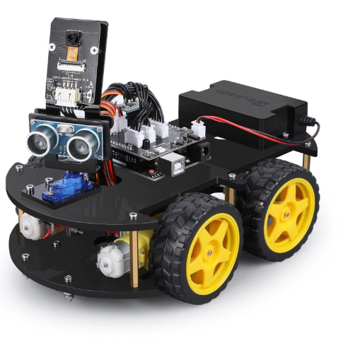
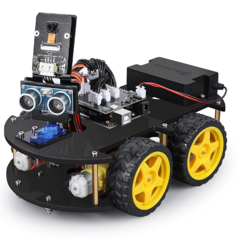

Sonic Rover
| 
|

|
| 
|
|
Para contruir o Sonic Rover, foi preciso várias etapas:
A ideia original é um robô que desvia de obstaculos com arduino
O primeiro passo foi idealizar a forma que o chassi teria, para isso usamos o programa Onshape. Compramos os materiais, e nos dividimos para cada um do grupo realizar uma parte do projeto.
Para a montagem, foi preciso comprar os equipamentos para os acoplar no chassi:
Com esses materiais nós conseguimos realizar a montagem do robô, utilizando as ferramentas do Senac.
A partir da tentativa e erro foi possível a
criação do chassi, onde no caso são dois, um com os motores e outro com os outros equipamentos. Para esse feito, foi preciso utlizar as ferramentas e materiais que o Senac nos disponibilizou. Assim, partimos para o próximo passo.
Nesta estapa foi preciso acoplar e conectar os equipamentos, motores e rodas no chassi, a partir do espaço e ferramentas do Senac.
Com o robô praticamente pronto, fomos para a programação do arduino, e com essa etapa completa, o projeto foi concluído.